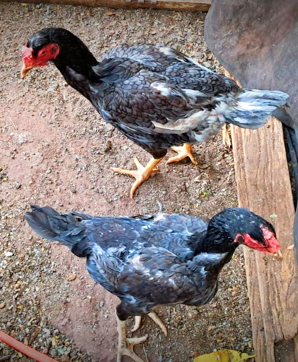
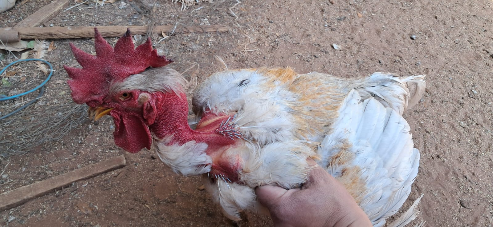
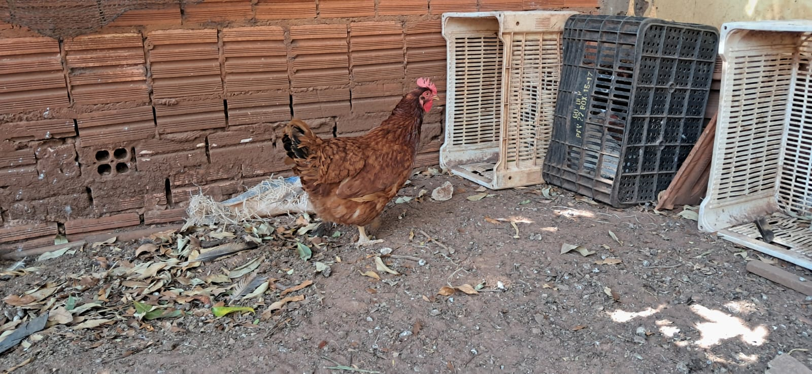
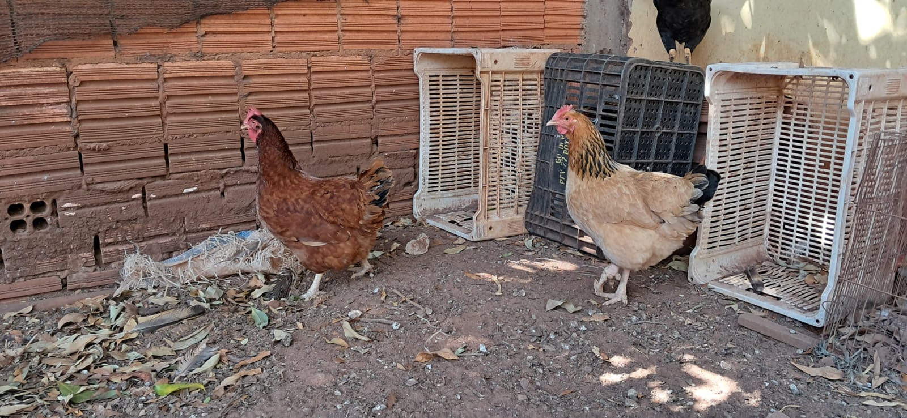

Confira algumas fotos da nossa criação de galinhas e do nosso galinheiro.
Galinha Polaca e Galinha ÍndiaFranguinhos com menos de 60 dias.Galinhas de granjas criadas como caipirasGalinha Índia de plumagem pretaGalinhas sendo alimentadas.

Lindas Frangas CaipirasCreche com lâmpada nos primeiros dias de vida.

Galo Polaco para corteGalinhas botadeiras.Galinhas sendo alimentadas.Galinhas botadeiras.Frangos com aproximadamente 100 dias de vida.

Galinha Embrapa 51

Embrapa 51 e Caipira ComumGalinhas e galo de reprodução.Galinhas caipiras pastando.Galinhas e galo de reprodução.Galinhas caipiras para reprodução, corte e produção de ovos.Pintinhos nascendo na chocadeira.Pintinhos nascendo na chocadeira.Galinhas botadeiras.Galinhas Rhodias e Galinha Plymouth RockGalinhas caipiras para reprodução, corte e produção de ovos.Galinhas caipiras para reprodução, corte e produção de ovos.